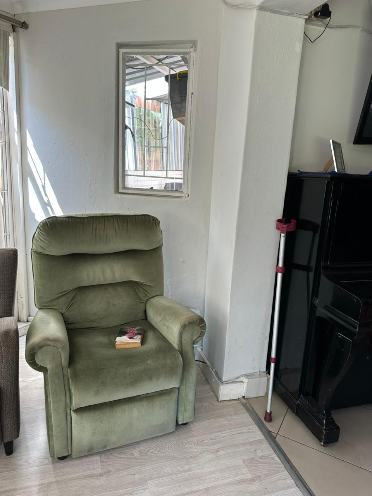
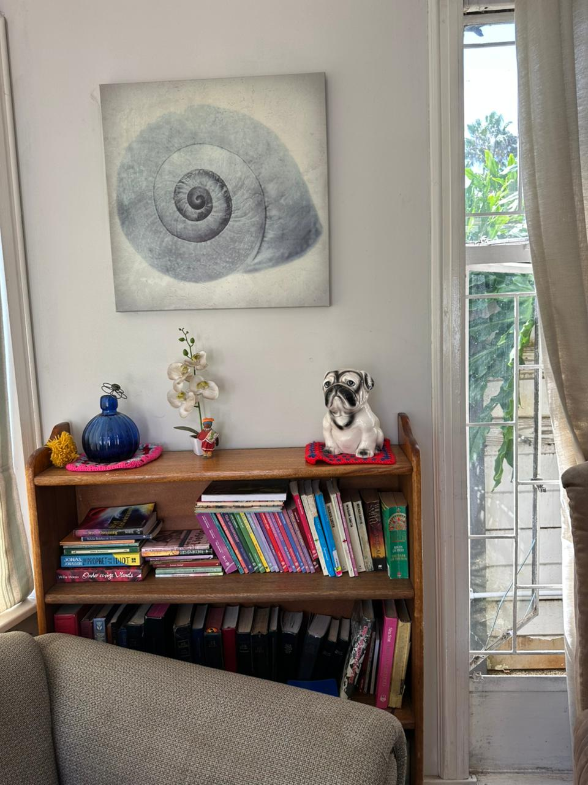
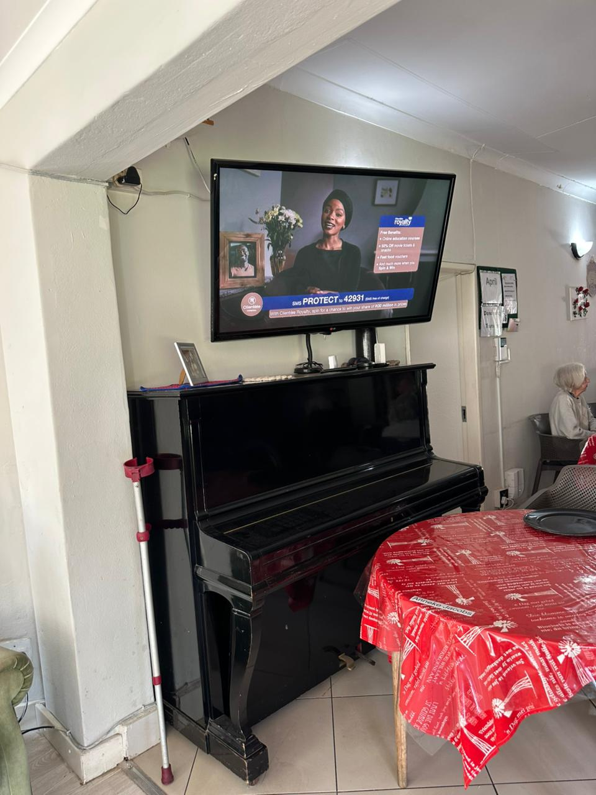

Our Home
A Glimpse of Life at Neli-Rose
Warm spaces, vibrant gardens, and a community full of life — this is where your loved one will call home.




Want to see more? Come and visit us in person.
Book a Tour